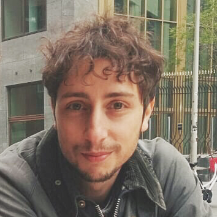

In 2012, after graduating from the University of Bologna with a BA in International Studies, I moved to Sydney, Australia, where I obtained a master’s degree in International Law & International Relations.
Since, I have worked for non profit organisations and in the landscape design company Edible Kids’ Gardens.
I have recently moved back to Europe to study software and web development.
My passions in life include technology, music, literature, history and international politics. I like travelling on my own, climbing mountains, jumping off cliffs, getting lost and going on adventures.